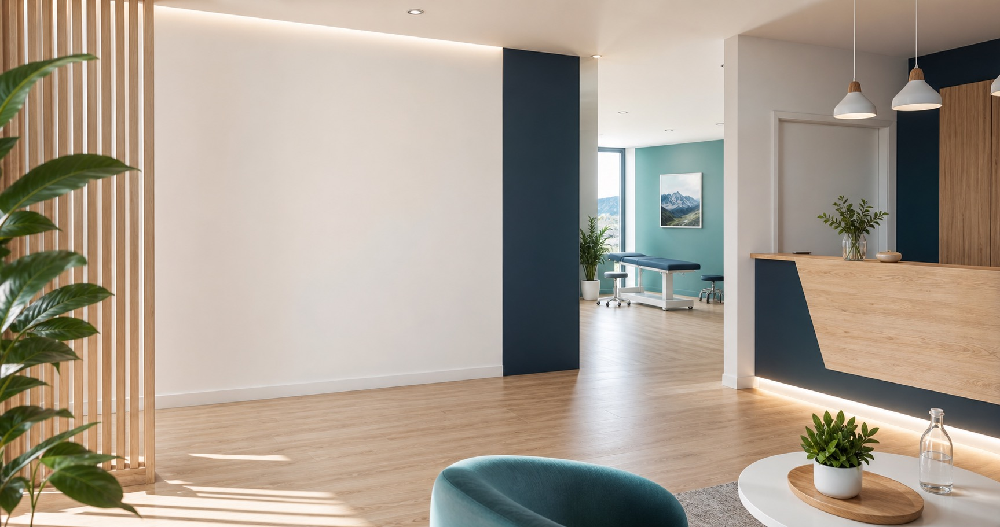
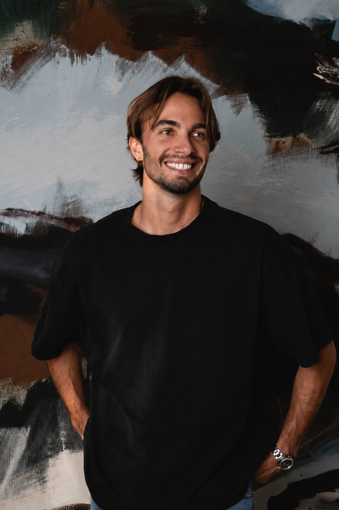

8h00 – 19h30

Cabinet Kiné Santé Grenoble
Kinésithérapie, rééducation fonctionnelle, accompagnement à domicile et entraînement à l’effort.
38000 Grenoble
via Doctolib
contact@kine-sante-grenoble.fr
Le cabinet
Un accompagnement clair, humain et personnalisé
Au Cabinet Kiné Santé Grenoble, nous accompagnons chaque patient avec une prise en charge adaptée à ses besoins : rééducation après blessure ou opération, douleurs du dos, perte de mobilité, reprise d’activité physique ou suivi à domicile.
Notre objectif est simple : vous aider à retrouver du confort, de la mobilité et de la confiance dans vos mouvements, avec un suivi progressif et professionnel.
Nos soins
Nos soins et accompagnements
Des prises en charge adaptées à votre situation, avec un suivi progressif et des objectifs clairs à chaque étape.
Kinésithérapie générale
Bilan, traitement et suivi personnalisé pour les douleurs, les troubles fonctionnels et les besoins de rééducation du quotidien.
Rééducation fonctionnelle
Travail progressif de la mobilité, de la force et de la coordination après blessure, opération ou immobilisation.
Rééducation à domicile
Accompagnement possible à domicile pour les patients ayant des difficultés à se déplacer ou nécessitant un suivi adapté.
Entraînement à l’effort
Reprise progressive de l’activité physique, amélioration de l’endurance et accompagnement dans le retour au mouvement.
Douleurs du dos
Prise en charge des douleurs lombaires, cervicales et dorsales avec une approche active et personnalisée.
Kinésithérapie du sport
Suivi des sportifs, prévention des blessures et accompagnement au retour à l’activité.
Rendez-vous
Prenez rendez-vous simplement
Vous pouvez prendre rendez-vous en ligne via Doctolib ou contacter directement le cabinet pour toute question pratique.
Le lien Doctolib sera remplacé par le profil réel du cabinet.
Grenoble
Informations pratiques
- Adresse
- 11 boulevard Jean Pain, 38000 Grenoble
- Horaires
- Lundi au vendredi : 8h00 – 19h30
Samedi : sur rendez-vous - Accès
- Tram C — arrêt “Hôtel de Ville”
Parking à proximité
Cabinet accessible aux personnes à mobilité réduite - Contact
- 04 00 00 00 00
contact@kine-sante-grenoble.fr
L’équipe
Un accompagnement à votre écoute
Le cabinet vous accueille avec une approche sérieuse, bienveillante et orientée vers des objectifs concrets. Chaque prise en charge commence par une écoute attentive afin de proposer un suivi adapté.

Kinésithérapeute
Rééducation fonctionnelle
- Concours d’entrée via STAPS à Grenoble
- École de kinésithérapie à l’IFKM de Grenoble
- Deux ans d’expérience comme kinésithérapeute à Grenoble
FAQ
Questions fréquentes
Dans la plupart des cas, une prescription médicale est nécessaire pour une prise en charge remboursée. Vous pouvez contacter le cabinet pour vérifier votre situation.
Oui, un lien Doctolib permet de prendre rendez-vous facilement en ligne lorsque le profil du cabinet est configuré.
Oui, un accompagnement à domicile peut être proposé selon la situation du patient et les disponibilités du cabinet.
Le cabinet accompagne les patients en kinésithérapie générale, rééducation fonctionnelle, douleurs du dos, rééducation post-opératoire, kinésithérapie du sport et entraînement à l’effort.
Contact cabinet
Contacter le cabinet
Une question avant de prendre rendez-vous, un besoin de suivi ou une demande d’information pratique ? Laissez vos coordonnées, le cabinet vous recontacte rapidement.
- Réponse pour une question de prise en charge
- Informations sur les horaires et l’accès au cabinet
- Orientation vers Doctolib pour réserver un créneau
Créer votre site
Hébergement mensuel offert
0 €
Vous voulez un site comme celui-ci pour votre cabinet ?
Un site vitrine clair, adapté au mobile, avec vos informations essentielles et un contact simple pour vos patients.
À partir de 350 €
Hébergement possible à 0 €/mois selon la solution choisie.
Petite modification : 30 € par demande ponctuelle.
L’essentiel inclus
- Page d’accueil
- Présentation activité
- Horaires
- Formulaire de contact
- Localisation
- Version mobile
Processus simple
- Échange rapide sur votre activité
- Création d’une première version
- Ajustements puis mise en ligne
Site créé par Axel Giret — giretaxel@gmail.com